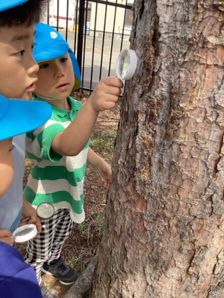
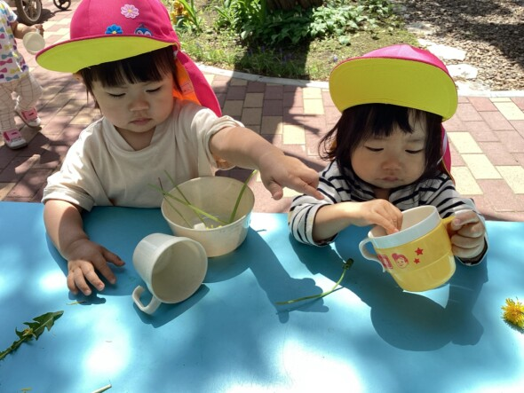
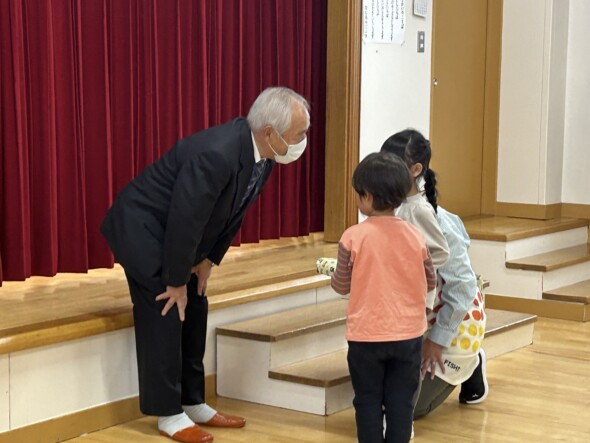

ほいくの森が選ばれる理由
WHY HOIKU-NO-MORI
「近いから」ではなく「送ってでも通わせたい」。北見のご家庭に選ばれている4つの理由です。
自然・外遊び
🌳広い園庭と、自然のなかで育つ
四季を感じる広い園庭で、思いきり体を動かす毎日。北見の自然を生かした外遊びが、子どもの「やってみたい」を引き出します。
探究・好奇心

🔍「なんで?」を大切にする探究の時間
虫めがね片手に木をのぞき込む。小さな発見の積み重ねが、考える力・伝える力につながります。ダンスや表現遊びも特色です。
0〜2歳から

🍀0歳から安心して預けられる
認定こども園だから、小さなお子さまから卒園まで切れ目なく。はじめての集団生活も、家庭的な雰囲気のなかでゆっくり慣れていけます。
仏教・心の教育

🙏仏さまの心・命を大切にする保育
「やさしい子・えがおであそぶ子・げんきな子」。あいさつや感謝の気持ち、命を大切にする心を、日々の暮らしのなかで育てます。